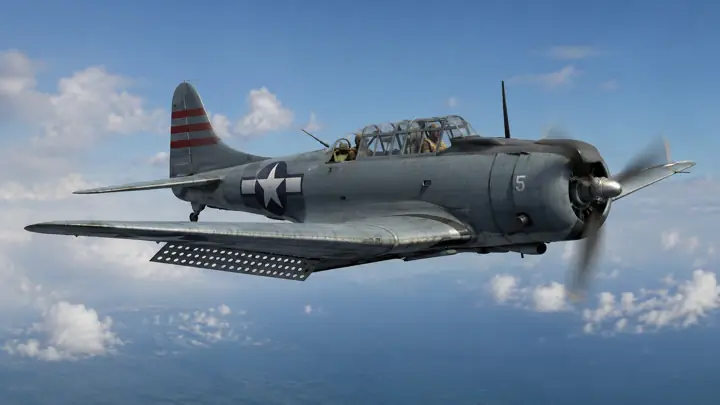

SBD operations · 1940–1945
The SBD Dauntless was the US Navy’s hard-working scout/dive bomber and one of the most important aircraft of the Pacific War. It helped stop Japanese expansion at Coral Sea, broke the carrier force at Midway, and supported Guadalcanal and Solomons operations from both carriers and land bases. A good SBD model starts with the campaign and variant: early blue-grey SBD-3, Midway aircraft, Marine Guadalcanal machines, late SBD-5s or Atlantic/tri-colour routes.

Role & strengths
- US Navy scout bomber and carrier dive bomber
- Coral Sea, Midway, Guadalcanal, Solomons and Marine land-base routes
- Perforated dive brakes, bomb crutch, two-seat cockpit and rear defensive gun
- Blue-Grey/Light Grey, tri-colour Navy camouflage and stars-and-bars changes
- Salt fading, chipped walkways, exhaust staining, coral dust and carrier deck grime
Key theatres
- Coral Sea and Midway carrier operations
- Guadalcanal and Henderson Field Marine routes
- Solomons and Central Pacific campaigns
- Atlantic anti-submarine / training and late-war reference routes
Specification SBD-5
Survivors today

Surviving SBDs are useful for dive brakes, bomb crutch, cockpit framing, rear gun, landing gear, wing fold/non-fold details and carrier-weathering reference.
View survivorsTimeline highlights
Build this SBD as…
Pick the campaign first. A Midway SBD-3, Guadalcanal Marine aircraft, late SBD-5, tri-colour carrier machine and Atlantic/training route all need different markings and weathering.
Aircraft identity
SBD-2, SBD-3, SBD-4 and SBD-5 details differ. Check cowl, prop, guns, aerials, bomb racks and markings before committing.
The perforated dive brakes are the model’s signature. Paint both sides carefully and keep weathering directional.
Paint scheme cards
Coral Sea and Midway route with faded blue-grey, early stars and carrier grime.
Guadalcanal/Henderson Field aircraft need coral dust, heat, grime and rough-field wear.
Late SBD-5s use tri-colour finish with sun fading and salt-weathering logic.
Weather walkways, dive brakes, bomb crutch, exhaust and lower surfaces separately.
Campaign cards
SBD-3 route with early-war markings and one of the strongest naval aviation stories.
Marine and carrier aircraft with coral dust, heat, hurried maintenance and field wear.
Later SBD-5 route with tri-colour camouflage and island/carrier weathering.
Less common routes with different markings, cleaner finishes and useful reference variety.
Build difficulty and related guides
Medium-high. Cockpit, dive brakes, bomb gear and weathering need care.
High. Dive brakes and bomb crutch must look crisp or the model loses its SBD identity.
High. Carrier, coral, salt and sun fading need different treatment by campaign.
SBD Dauntless carrier and Marine units
Sortable SBD unit cards covering Midway carrier squadrons, Marine Guadalcanal units, Solomons/Central Pacific and survivor/reference routes.
SBD Dauntless operating map
Airfield info
Click a marker to show linked SBD unit cards and modelling notes.
Campaign timeline
Survivors
Books and reference sources
SBD Dauntless build guide
SBD Dauntless videos, photos and archive material
Media replaces the old separate walkaround tab: cockpit, exhaust, undercarriage, markings, survivor references, archive imagery and video cards are grouped here.